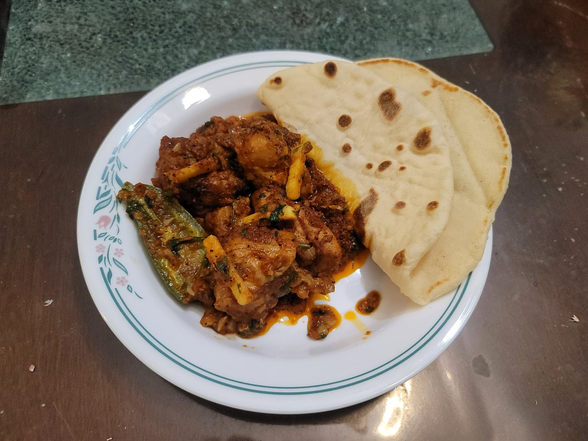

Chicken Karahi

Ingredients:
- 1 1/2 lb Chicken thigs, bone-in, skinless, chopped into chunks
- 1/2 cup Ghee or Canola oil
- 1 head Garlic, minced
- 2 tbsp Ginger, minced
- 1 1/2 lb Tomatoes, diced
- 1 tsp Salt, or to taste
- 2 tsp Kashmiri chili powder
- 1 1/2 tsp Coarse black pepper (coarsely grated is important)
- 1 tsp Red chili flakes
- Optional: 1 tsp Kalonji
- 1/2 tsp Cumin
- 1/2 tsp Coriander
- 2 Mild green peppers, like jalapeño
- 1/2 bunch Cilantro + more, chopped
- 1/4 cup Ginger, julienned
Instructions:
- Heat the ghee in either a wok or karahi over high heat. Add in the chicken and stir-fry until they start to take on a golden color, about 2-4 minutes stirring constantly. Then add in the minced garlic and ginger and continue to stir-fry for about a minute.
- Add in the tomatoes and the spices. Stir-fry while stirring constantly for 20 minutes. The gravy will thicken substantially.
- Reduce the heat to low and add in the peppers and cilantro. Cook for 5 minutes, stirring occasionally.
- Remove from the heat and stir in the julienned ginger and additional cilantro. Serve hot with rice or naan.